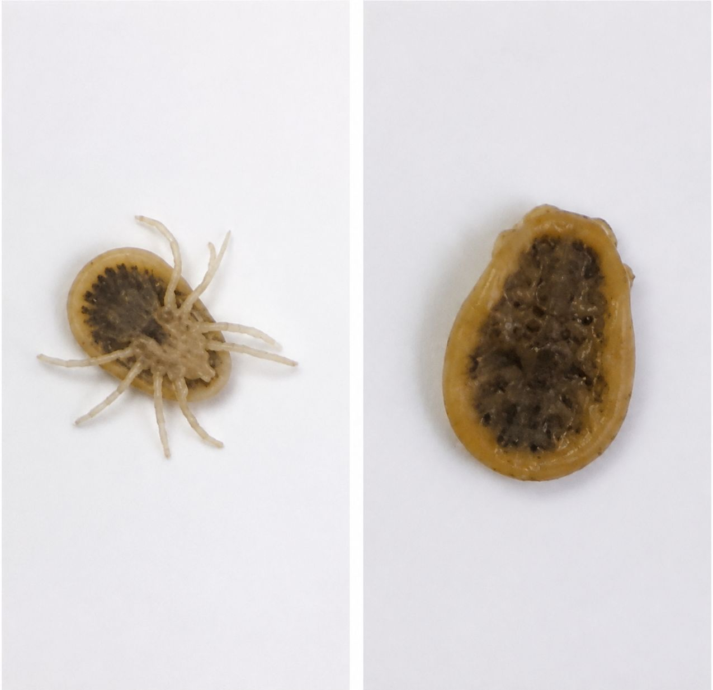
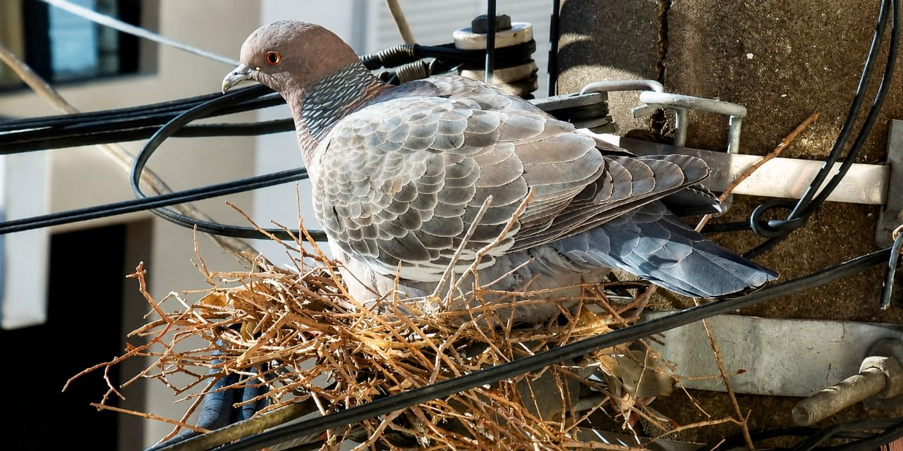

شاید شما هم در شبهای تابستان، خارشی ناگهانی و بیدلیل روی پوست خود احساس کردهاید، بدون اینکه هیچ حشرهای را ببینید. شاید روی ملحفه یا لباس خود لکههای خون کوچکی دیدهاید که نمیدانید از کجا آمدهاند. اینها میتوانند نشانههای حضور یک آفت خطرناک و ناشناخته در خانه شما باشند: کنه کبوتر.

کنه کبوتر (Argas reflexus) یکی از چالشبرانگیزترین آفات شهری است که متأسفانه در سالهای اخیر بهطور قابلتوجهی در ایران، بهویژه در تهران و سایر کلانشهرها، افزایش یافته است. این انگل که عمدتاً از خون کبوتران تغذیه میکند، میتواند با ترک لانهٔ پرندگان، وارد منازل مسکونی شده و سلامت ساکنان را بهطور جدی به خطر بیندازد.
در این مقاله جامع و تخصصی، شما را با همه چیز درباره کنه کبوتر، از بیولوژی و رفتارشناسی گرفته تا خطرات، علائم گزش، روشهای تشخیص و پیشگیری، و مهمتر از همه، روشهای اصولی و تخصصی سمپاشی و ریشهکنی آن آشنا میکنیم.
کنه کبوتر با نام علمی Argas reflexus، حشرهای با بدنی تخت، بیضیشکل و به رنگ خاکستری‑قهوهای است که شباهت زیادی به دانه گلپر دارد. این آفت از زیرخانواده کنههای نرم (Argasidae) محسوب میشود و بهطور اختصاصی از خون کبوتران و سایر پرندگان تغذیه میکند.
| ویژگی | توضیح |
|---|---|
| اندازه | بالغین ۴ تا ۱۵ میلیمتر طول و ۶ تا ۷ میلیمتر عرض (بدون تغذیه) |
| شکل بدن | تخممرغی، پهن و چرمیشکل با بدنی نرم |
| رنگ | قهوهای مایل به خاکستری (پس از تغذیه، بزرگتر و تیرهتر میشود) |
| طول عمر | بسیار طولانی، حدود ۱۰ سال |
| مقاومت به گرسنگی | قادر است تا ۳ تا ۵ سال بدون تغذیه زنده بماند |
| فعالیت | شبزی؛ در طول روز در شکافها، زیر کاغذ دیواری و قرنیزها پنهان میشود |
| تغذیه | هر بار به مدت ۳۰ تا ۹۰ دقیقه از خون میزبان تغذیه میکند و سپس جدا میشود |
کنه کبوتر برخلاف بسیاری از کنههای سخت، قطعات دهانی خود را در زیر بدن پنهان میکند، بهطوریکه از نمای بالا فقط پاهای آن قابل مشاهده است.

این کنهها بهعنوان انگلهای موقت و شبزی، بیشتر عمر خود را در لانهها و شکافهای اطراف محل استراحت پرندگان میگذرانند. آنها عمدتاً در فضاهای شهری مانند شیروانیها، کبوترخانهها و طبقات بالای ساختمانها که کبوتران در آن لانه میسازند، زندگی میکنند.
چرخه زندگی کنه کبوتر شامل مراحل تخم، لارو، پوره و بالغ است. این کنهها چندین مرحله پورگی را طی میکنند و در هر مرحله برای رشد به خون میزبان نیاز دارند. دورهٔ زمستان را در حالت خفتگی (دیاپوز) سپری میکنند و از اوایل فروردین مجدداً فعال میشوند.
اگرچه میزبان اصلی کنه کبوتر، کبوتران وحشی و اهلی هستند، اما در غیاب میزبان اصلی یا در صورت کاهش تراکم جمعیت کبوتران، این کنهها میتوانند بهراحتی وارد منازل شده و از خون انسان تغذیه کنند.
گزش کنه کبوتر معمولاً بدون درد است و در ابتدا یک لکهٔ خونمردگی کوچک روی پوست برجای میگذارد. بهدنبال آن، یک تاول خارشدار در همان ناحیه ایجاد میشود که با قرمزی و تورم همراه است. این علائم ممکن است چند روز تا چند هفته در افراد حساس باقی بمانند.
کنه کبوتر با ترشح بزاق خود هنگام گزش، مواد آلرژنزا را وارد بدن میزبان میکند که میتواند منجر به واکنشهای آلرژیک شدید و حتی مرگبار شود.
شایعترین علائم آلرژیک شامل:
خطرناکترین عارضه: آنافیلاکسی (شوک حساسیتی)
در موارد نادر اما بسیار جدی، گزش کنه کبوتر میتواند باعث شوک آنافیلاکسی شود که یک واکنش حساسیتی تهدیدکنندهٔ حیات است. در برخی گزارشها، موارد مرگ ناشی از آنافیلاکسی ناشی از گزش این کنه ثبت شده است. همچنین سندرم کونسیس (درگیری قلبی در واکنش آنافیلاکسی) نیز در یک مورد گزارش شده است.
اگرچه کنه کبوتر عمدتاً بهعنوان یک انگل مزاحم شناخته میشود، اما میتواند ناقل عوامل بیماریزای مختلفی نیز باشد:
آلودگی منازل به کنه کبوتر معمولاً بهدلیل تخلیهٔ لانهٔ کبوتران از سوی پرندگان رخ میدهد. در این شرایط، کنهها که میزبان اصلی خود را از دست دادهاند، بهدنبال میزبان جدید (انسان) حرکت میکنند.
راههای اصلی ورود به ساختمان:
| مسیر ورودی | توضیح |
|---|---|
| پشت پنجرهها | کبوتران اغلب در پشت پنجرههای طبقات بالا، بهویژه در شمال تهران، لانه میسازند |
| کانالهای کولر | ورودی کولرهای آبی محل مناسبی برای لانهسازی کبوتران است |
| شکافهای دیوار و سقف | کنهها از طریق ترکهای ساختمان به داخل نفوذ میکنند |
| لولههای تأسیسات | مسیرهای ارتباطی بین طبقات |
| شیروانی و پشت بام | مکانهای اصلی لانهسازی کبوتران |

نکته مهم: بر اساس تجربه کارشناسان، آلودگی به کنه کبوتر در طبقات بالای ساختمانها، بهویژه در مناطق شمالی تهران که جمعیت کبوتران بیشتر است، شیوع بیشتری دارد.
تشخیص بهموقع این آفت، کلید موفقیت در ریشهکنی آن است. این نشانهها را جدی بگیرید:
کنترل کنه کبوتر بهدلیل مقاومت بالا، طول عمر زیاد و توانایی زندهماندن بدون غذا برای سالها، یکی از دشوارترین عملیاتهای مبارزه با آفات است. روشهای خانگی معمولاً کارساز نیستند و استفاده از روشهای تخصصی ضروری است.
گام اول و حیاتی، شناسایی دقیق لانهها و محلهای تجمع کنهها است. کارشناسان ما با بررسی کامل ساختمان، موارد زیر را مشخص میکنند:
قبل از هر گونه سمپاشی، باید لانههای کبوتر را بهطور کامل پاکسازی کرد. در غیر این صورت، سمپاشی اثر ماندگاری نخواهد داشت.
پس از پاکسازی، نوبت به سمپاشی تخصصی میرسد. این کار باید توسط کارشناسان مجرب و با استفاده از ترکیب مناسب سموم انجام شود.
اصول سمپاشی حرفهای کنه کبوتر:
بهدلیل مقاومت بالای تخمهای کنه، معمولاً یک جلسه سمپاشی کافی نیست. ممکن است ۲ تا ۳ جلسه با فواصل ۲ هفتهای نیاز باشد تا کنههای تازه تفریخشده نیز از بین بروند.
پس از ریشهکنی، با رعایت این نکات میتوانید از بازگشت مجدد کنهها جلوگیری کنید:
یکی از نقاطی که اغلب نادیده گرفته میشود اما یکی از مهمترین مسیرهای ورود کبوتران و در نتیجه کنه کبوتر به ساختمانهاست، درز انقطاع بین دو ساختمان است. این فاصله که معمولاً بین ۵ تا ۵۰ سانتیمتر است، محل مناسبی برای لانهسازی کبوتران محسوب میشود، زیرا:
کبوتران با نفوذ به این درزها، لانههای خود را ساخته و به مرور زمان، کنهها از طریق شکافهای دیوار و مسیرهای تأسیساتی وارد واحدهای مسکونی مجاور میشوند.
🔹 راهحل تخصصی شرکت نانوفناوران:
تیم مجرب و آموزشدیدهٔ ما با استفاده از تجهیزات پیشرفته راپل (کار در ارتفاع) و سموم تخصصی، عملیات زیر را انجام میدهد:
✅ پرسنل مجهز و مجرب ما با استفاده از تجهیزات ایمنی کامل، این عملیات را در بالاترین ارتفاع با خیال راحت انجام میدهند.
هزینه سمپاشی کنه کبوتر به عوامل مختلفی بستگی دارد:
| عامل | تأثیر بر هزینه |
|---|---|
| مساحت و نوع مکان | منازل مسکونی، ویلاها، انبارها و مراکز صنعتی هزینههای متفاوتی دارند. |
| شدت آلودگی | آلودگی شدید نیاز به عملیات بیشتر و زمانبرتری دارد. |
| دسترسی به نقاط آلوده | در صورت نیاز به سمپاشی در ارتفاعات یا محیطهای بزرگ، هزینه افزایش مییابد. |
| تعداد جلسات | معمولاً ۲ تا ۳ جلسه با فاصلهٔ دو هفته نیاز است. |
💡 توصیه: برای دریافت مشاوره رایگان و استعلام دقیق هزینه، با کارشناسان ما تماس بگیرید.
خیر، سموم استفادهشده توسط شرکت نانوفناوران با رعایت کامل استانداردهای بهداشتی انتخاب میشوند. همچنین با تخلیهٔ منزل بهمدت ۲۴ ساعت و سپس تهویه و شستشوی کامل، محیط کاملاً ایمن میشود.
کنههای بالغ بلافاصله پس از سمپاشی از بین میروند. اما برای اطمینان از نابودی تخمها و کنههای تازه تفریخشده، معمولاً ۲ تا ۳ جلسه سمپاشی با فاصلهٔ دو هفته نیاز است.
استفاده از اسپریهای خانگی و روشهای سنتی معمولاً مؤثر نیست و ممکن است خطرناک باشد. شناسایی دقیق لانهها، انتخاب ترکیب مناسب سموم و رعایت اصول ایمنی نیاز به تخصص دارد.
بله، کنه کبوتر در بسیاری از شهرهای بزرگ ایران دیده میشود، اما شیوع آن در مناطق شمالی تهران و سایر کلانشهرها که جمعیت کبوتران بیشتر است، بهمراتب بالاتر است.
با رعایت نکات زیر میتوانید خطر گزش را کاهش دهید:
کنه کبوتر یکی از جدیترین تهدیدات سلامت در محیطهای شهری است که میتواند با گزش خود، واکنشهای آلرژیک شدید، بیماریهای عفونی و حتی آنافیلاکسی مرگبار ایجاد کند. این آفت مقاوم با طول عمر طولانی و توانایی زندهماندن بدون غذا برای سالها، بدون کمک متخصصان بهسختی ریشهکن میشود.
شرکت سمپاشی نانوفناوران با بیش از ۲۰ سال تجربه و استفاده از پیشرفتهترین روشهای کنترل آفات، آماده ارائه خدمات تخصصی و تضمینی به شماست. تیم کارشناسان ما با استفاده از سموم استاندارد و تجهیزات مدرن، کنه کبوتر را بهطور کامل و قطعی از منزل یا محل کار شما حذف میکنند و محیطی امن و آرام را برای شما و خانوادهتان به ارمغان میآورند.
🚀 همین حالا اقدام کنید:
📞 تماس فوری: ۰۹۱۲۰۷۰۵۷۴۶
💬 درخواست مشاوره رایگان: از طریق واتساپ یا ایتا
🔗 مشاهده سایر خدمات: کنترل آفات مسکونی